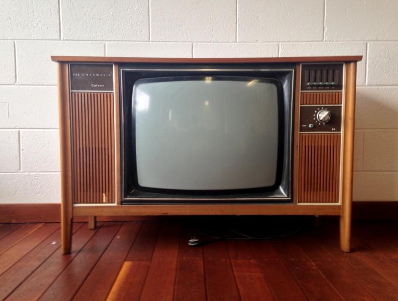
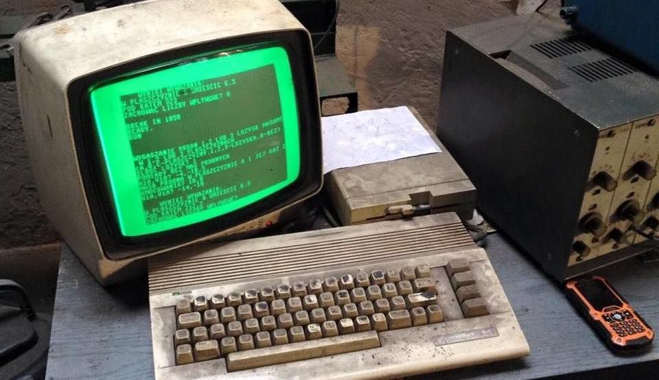
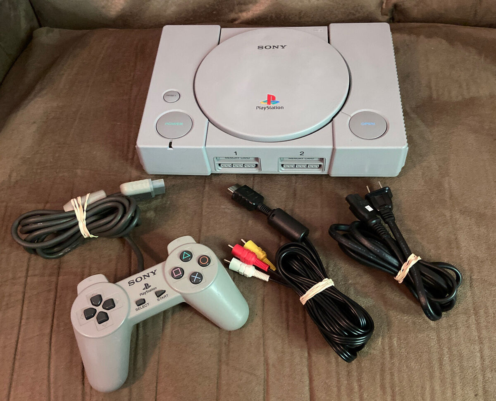

1970-es évek
A 70-es évek technikai világát a kazettás magnók, fekete-fehér TV-k és az első videojátékok, mint a Pong jellemezték. A háztartásokban ekkor jelentek meg először a mikrosütők és az otthoni hifitorony is presztízskérdés volt.

1980-as évek
Az otthoni számítástechnika forradalma: Commodore 64, ZX Spectrum és társai. A VHS-lejátszók és bakelitlemezek továbbra is népszerűek voltak, és a walkman megváltoztatta a zenehallgatási szokásokat.

1990-es évek
A 90-es években már elérhetővé váltak a CD-lejátszók, megjelentek az első otthoni internetkapcsolatok, és a konzolos játékok aranykora kezdődött: SNES, Sega Mega Drive, PlayStation. A Game Boy minden gyerek álma volt.